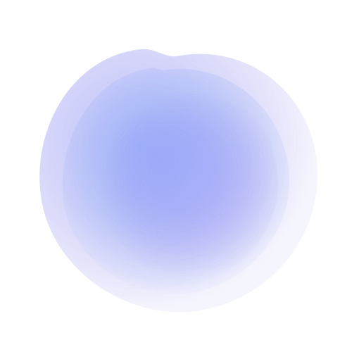

Based in Zagreb, Croatia, I spend my cycles optimizing the digital backbone of international giants through Arctis d.o.o. My professional focus centers on the Archibus IWMS platform—where I reconcile complex Java backends with modern React integrations for organizations like Saudi Aramco and the European Space Agency.
I don't just write code; I architect longevity. Whether it's SQL query refinement or bridging the gap between legacy enterprise modules and current-gen web standards, my approach is one of intellectual rigor and technical precision.
Note: While my daylight hours are spent on enterprise software for Saudi Aramco and ESA, the following entries are experiments, utility scripts, and bespoke builds for private clients.